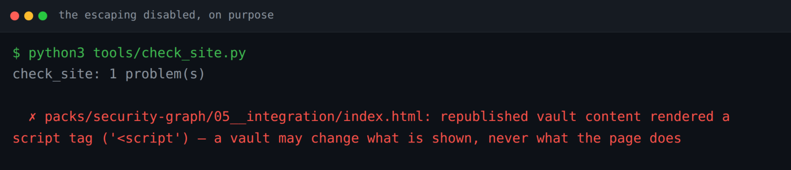
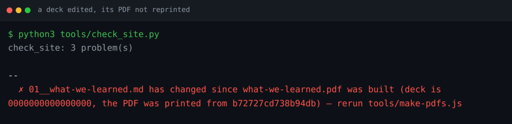
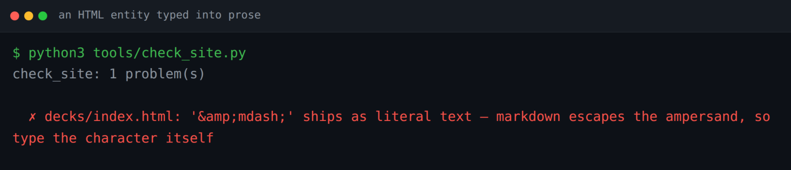
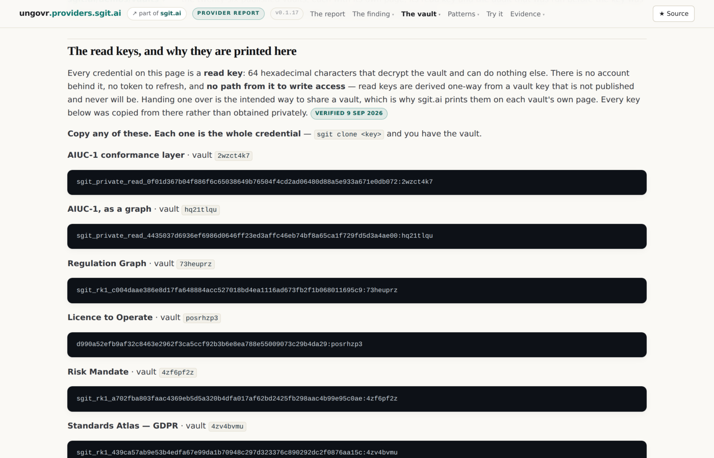

Independent. No commercial relationship with UnGovr
— no funding, no agreement, no conversation of any kind — checked 9 September 2026.
Disclosures · how every claim here is evidenced
This site makes claims about itself: that it contacts nothing, that vault content is republished byte for byte, that every figure is generated rather than typed.
Thirty-two checks turn those from sentences into facts. The build fails; the release does not ship.
What makes the list worth reading is that almost every entry has a story, and the story is usually that we got it wrong first.
The claim ledger: every factual claim, its state, its date, and the page it is said on.
Notes. Do not present this as rigour for its own sake. Each check is a scar. The honest framing is: here is what we shipped badly, and here is what now makes that impossible.
What the build refuses · slide 2 of 10
The worst one: a vault document could run script here
Reading sgit.ai's guidance turned up the rule this site was breaking:
On a *.sgit.ai page there is no host — you are the host — and the bytes you render were written by whoever holds the vault's write key. A vault must be able to change what is shown, and never what the page does.
A <script> in a pack file became a real script tag and executed. So did <img src=x onerror=…>. Confirmed in a browser, not reasoned about.
Republished vault content on this origin. Until v0.1.15, a <script> in one of these files ran.
Notes. We hold that write key, so nobody was going to attack us with it. That is not the point: the discipline is what makes the pattern safe to reuse on a vault somebody else writes.
What the build refuses · slide 3 of 10
The fix, and the gate that keeps it fixed
Republished vault files render in an untrusted mode: raw HTML escaped, no shortcodes — a vault file must not mint a claim chip either — and links restricted to http, https, mailto, a relative path or a fragment.
A markdown link was the second vector: [x](javascript:…) minted a live javascript: href.
check_no_vault_markup reads the built pages rather than trusting the flag was set.

Real output: the gate firing with the escaping deliberately switched off, then put back.
Notes. The screenshot is the gate firing with the escaping deliberately switched off. That is the only way to demonstrate a check that passes: break the thing it protects.
What the build refuses · slide 4 of 10
The false positive that would have taught the wrong lesson
The first version of that gate flagged this, in a page that was working correctly:
<img src=x onerror="…">
That is the escaper doing its job — inert text, not markup. A gate that fires on its own fix teaches the next person to loosen the fix until the gate goes quiet.
Every pattern now requires a real < or a real attribute.
The escaped rendering the false positive fired on — inert text, and the renderer working.
Notes. This one has never fired in anger. It exists because the failure mode is silent: nothing errors, the page looks right, and the two copies quietly diverge.
What the build refuses · slide 6 of 10
A deck edited, its PDF not reprinted
The PDFs are generated by a browser and committed, because CI has no browser and a deck nobody can download is not the point.
That makes staleness the risk — so data/deck-pdfs.json records the sha256 of the deck each PDF was printed from, not of the PDF alone.
Move the words, and the build demands the PDF be reprinted.

Real output: a deck's words moved and its PDF not reprinted.
Notes. Recording the hash of the source rather than the output is the whole trick. A record of the output only tells you the file has not been tampered with; a record of the source tells you it is still the right file.
What the build refuses · slide 7 of 10
An HTML entity typed into prose
— in a page's lead shipped as six literal characters. Markdown escapes the ampersand first, so the reader sees — rather than a dash.
It went out in v0.1.14 and was caught in a screenshot, not by a check. The build was perfectly happy.
The check that now catches it caught four more of mine within the hour.

Real output: an HTML entity typed into prose, which ships as six literal characters.
Notes. The gate caught its author, on the release that introduced the gate. That is the best possible evidence that it is pointed at something real.
What the build refuses · slide 9 of 10
The scan that had to look past its own prefixes
A credential scan built for sgit shapes will not catch other secrets. We nearly published an OpenRouter key sitting in a vault file, in a field called openrouter_key, that matched none of the sgit patterns.
Seventeen patterns now, including one that matches a credential named by its field rather than by a known prefix.
The first version of that pattern did not catch openrouter_key either — the anecdote repeating itself inside the fix for the anecdote. Caught by testing it against the case.

Read keys printed in full where a person can copy them. Vault keys never touch this repository.
Notes. Say the last line slowly. Writing the fix is not the same as verifying the fix, and the only difference is whether you ran it against the thing it was for.
What the build refuses · slide 10 of 10
What this does not prove
No check proves a site is correct. Thirty-two of them prove that thirty-two specific things that once went wrong cannot go wrong silently again.
The defects that shipped were found by reading the guidance, driving a browser, parsing a table with a script, and looking at a screenshot — not by the checks.
Checks are memory, not judgement. They stop you making the same mistake twice; they have never once found a new one.
Every request with the sha256 of the bytes it returned, 404s included — checks are memory, not judgement.
Notes. End here. The pitch for this way of working is not that it prevents mistakes — it obviously did not. It is that each mistake gets made exactly once, and the record of it stays readable by whoever comes next.
These slides are rendered from 06__what-the-build-refuses.md, republished byte for byte from the vault. The live decks — the same file, parsed by the vault's own app — are in the Decks view of the vault, which moves the moment the vault does. This page moves when the site rebuilds.